[Java] 1. Javaとは？、Javaインストール、Eclipseインストール
こんにちは。明月です。
この投稿はJavaとは？、Javaインストール、Eclipseインストールに関する説明です。
この投稿からJavaに関して説明しようと思います。私の注力の言語はC#です。JavaとC#の差異といえばほぼ同じです。オープンソースの種類の差異がありますが、似ているので、C#の言語が主に使ってもJavaを使うことで違和感がありませんでした。
逆にオープンソースの量だけ考えるとC#より多いことがあるので使うことではもっと楽なこともありました。でも、ライセンスや整合性保証に関して疑問があるので、使うことではよく考えて使わなければなりませんでした。
でも、日本の仕事現場に関してC#よりJavaのことが多いです。仕事のスタイルによって違いますが、一応、私が考えるのはそうです。
それならこれからJavaに関して調べてみましょう。
Javaについて
「Java」は1991年代にジェームズ・ゴスリンとその人のチームによって開発されて1995年に発表しました。初めは家電製品等のため開発されましたが、現在はウェブアプリケーションで一番人気があるプログラム言語になりました。
現在、「Java」はサン・マイクロシステムズによって無料で提供しているし、「Java」のバージョンは12.0まで発表しました。
「Java」の場合は「C#」と比べて値段が安いですが、安いって言うのは「C#」言語ライセンスがお金をがかかることではなく、Javaの環境を作るように立ち上がるシステムが無料オープンソースが多いです。
例えば、サーバの場合はCentOSがあるし、IDEツールでも「Eclipse」、「NetBeans」があるます。そしてウェブサーバ、アプリサーバの「Apache」、「Tomcat」、「GlassFish」、「JBoss」がすべて無料なので、システムを立ち上げる時、比較的に安く構築ができます。
そうすればJavaを開発するためにJavaのインストールとEclipseをインストールしましょう。
最近のWindows環境だと基本的にJavaがインストールされていますが、バージョンが古いことがあるので最新バージョンをダウンロードしましょう。
(参考：JavaのバージョンはOracleバージョンとOpenJavaバージョンがありますが、Oracleの場合は最近著作権の問題で一応無料ですが、念のためOpenJavaでインストールしましょう。)
Javaインストール
リンク - https://jdk.java.net/12/
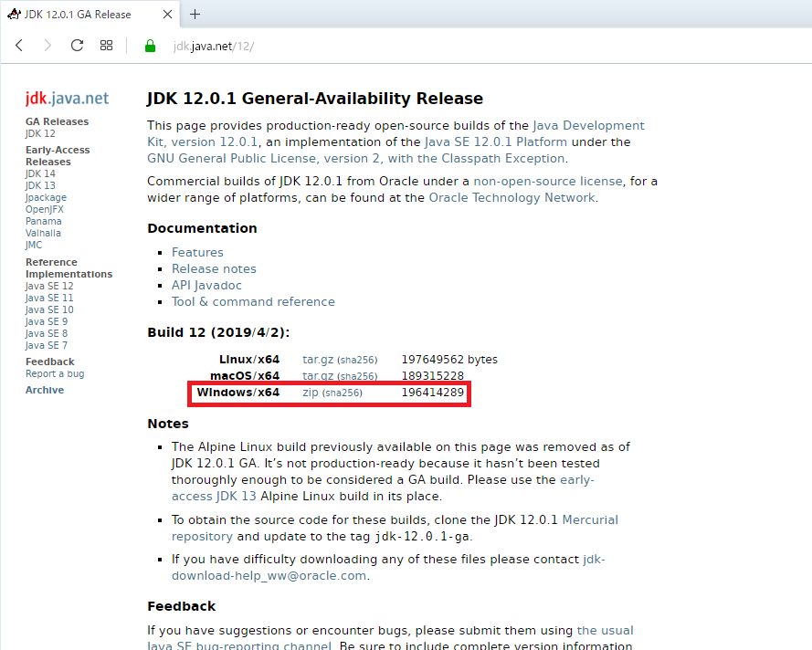
上のリンクを接続してopenJDK12をダウンロードしましょう。ホームページ見れば、もう32ビットのJavaは存在もしないです。32ビットを利用したいなら、仕方がなくoracle JSKを使うしかないです。
ダウンロードが完了すれば適当なところで圧縮を解凍しましょう。私の場合はd:\javaに解凍しました。
Javaをインストールしましたら、これからはPathを設定します。
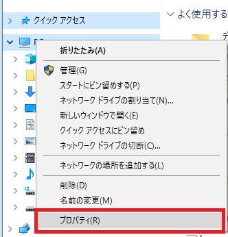

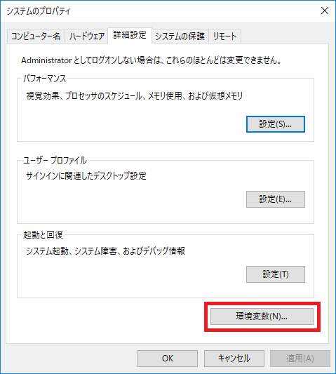
そしてシステム環境設定の「JAVA_HOME」をd:\javaに設定します。もし、JAVA_HOMEの変数がなければ生成します。
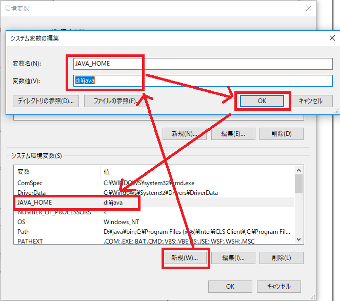
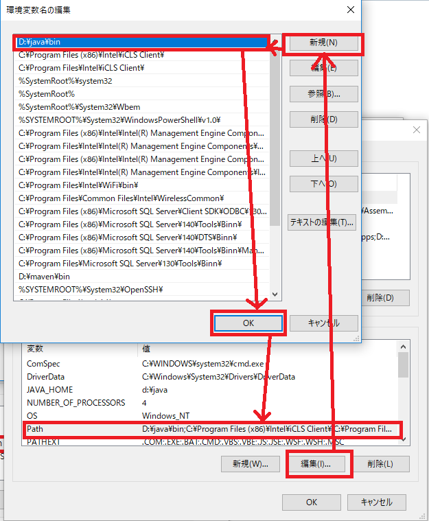
これから「Windowキー」 +「R」を打って「CMD」のコマンドを入力して実行しましょう。そうしたらコマンドのウィンドウを開きます。そしてコマンドで「java -version」を入力してバージョンが確認しましょう。Javaが正しくインストールされたかを確認しましょう。
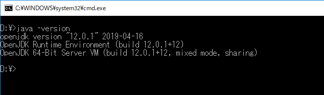
Eclipseインストール
これからJavaの開発ツール(IED)のEclipseをインストールしましょう。開発ツール関してはEclipseだけじゃなく、様々なものがあります。でも私の場合はEclipseしか使ったことがないし、他のツール、例えばNetBeansはすごく不便でした。多分、私の使い方法を知らないからそうかもしれませんが、個人的な感じはEclipseが一番によさそうではないかと思います。
リンク - https://www.eclipse.org/downloads/packages/
グーグルで検索してダウンロードしても構いないですが、ただStandardバージョンを使ったら各種パッケージを別にインストールしなければならないです。例えば、ウェブサービスを開発する時にウェブ関係なパッケージをインストールして設定しなければならないですが、それがすごく面倒になります。なので、基本的なパッケージがインストールされているEnterprise versionをインストールする方が楽です。ただ、Enterprise versionは少し重い感じがあるのでパソコンのスペックが必要かもしれません。
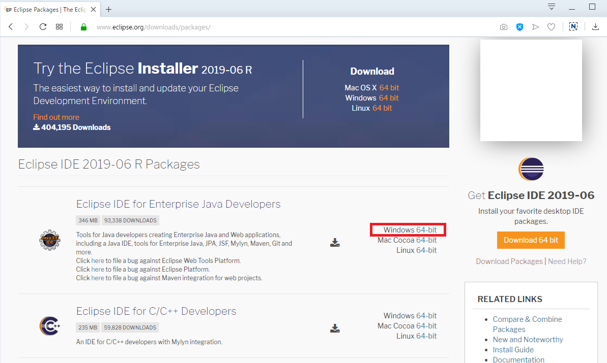
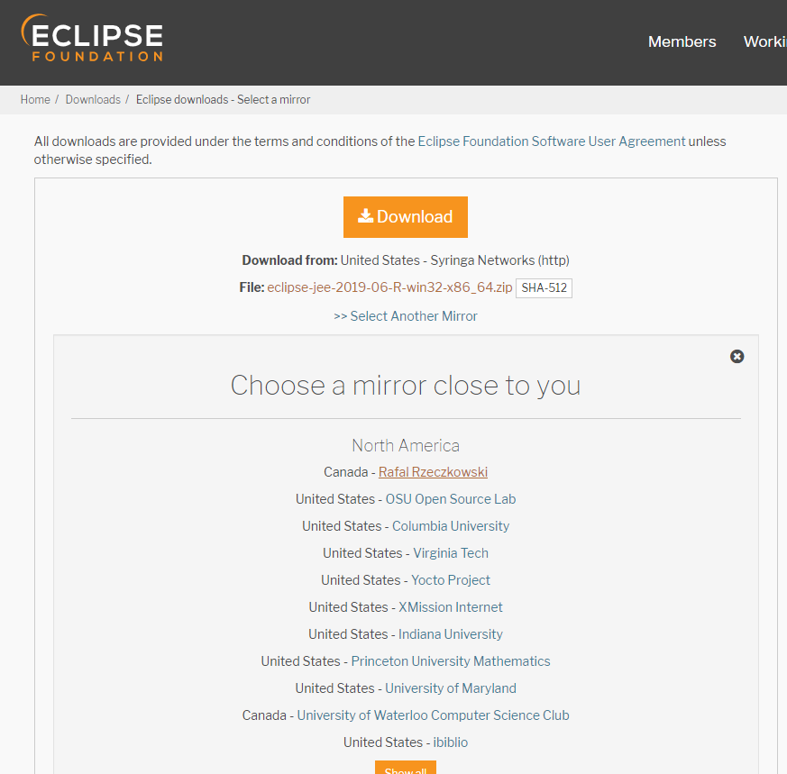
ダウンロードが終われば、適当なところで圧縮を解凍します。私の場合はd:\eclipseに圧縮を解凍しました。
そしてEclipseを実行すればソースを格納するディレクトリを選択するポップアップが出ます。
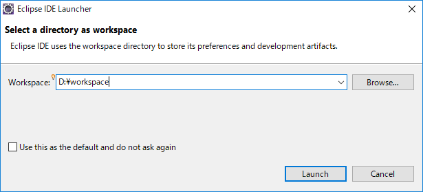
これも適当なところで指定するとよいです。私の場合はd:\workspaceに作成しました。
すべてのインストールを完了しました。これからプロジェクトを生成してHello worldを出力しましょう。
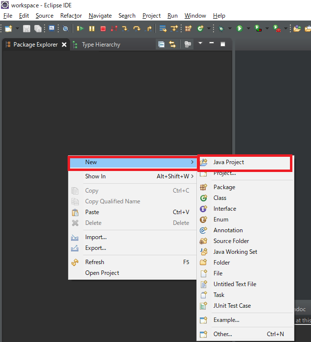
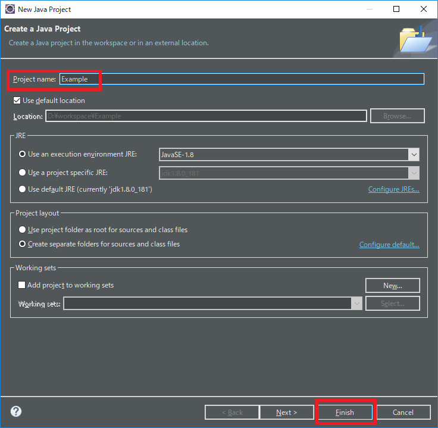
プロジェクトを生成しました。これからクラスを生成してmain関数を生成しまましょう。
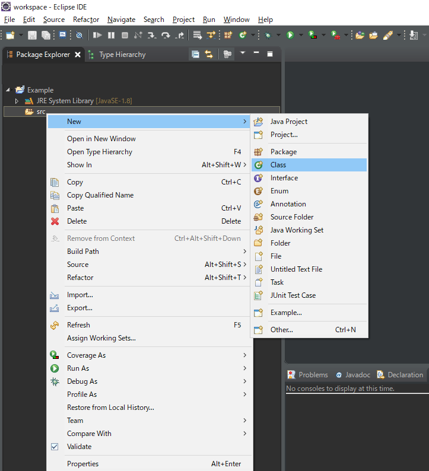
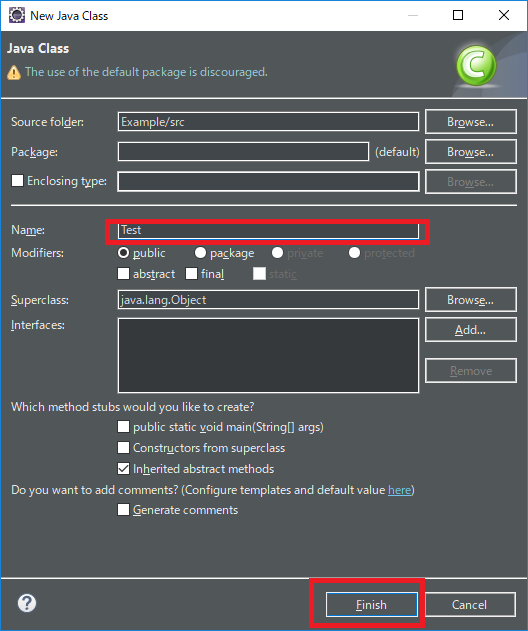
public class Test {
public static void main(String... args) {
System.out.println("Hello world");
}
}
ソースを作成しました。これからデバックをしましょう。
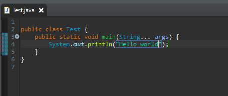
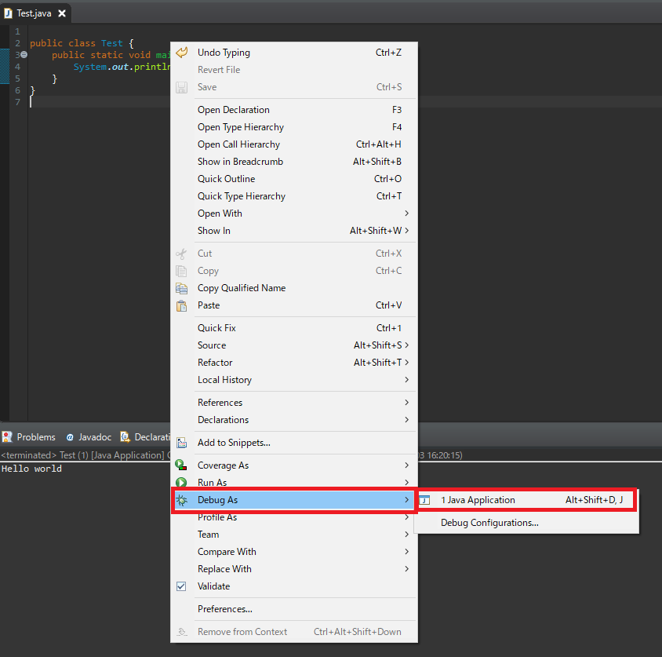
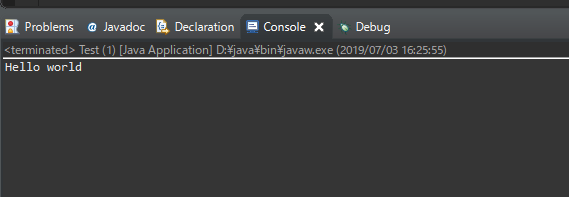
Hello worldの結果が出ました。
ここまでJavaとは？、Javaインストール、Eclipseインストールに関する説明でした。
ご不明なところや間違いところがあればコメントしてください。
- [Java] 15. 列挙型(バイナリデータビット演算子の使用例)2019/08/23 19:46:10
- [Java] 14. オブジェクト指向プログラミング(OOP)の4つ特性(カプセル化、抽象化、継承、多相化)2019/08/22 20:08:37
- [Java] 13. 抽象クラス(abstract)と継承禁止(final)2019/08/22 00:06:20
- [Java] 12. インタフェース(interface)2019/08/20 23:46:23
- [Java] 11. StringのhashCodeとequals、そしてtoStringの再定義(override)2019/08/20 00:42:04
- [Java] 10. メモリの割り当て(stackメモリとheapメモリ、そしてnew)とCall by reference(ポインタによる参照)2019/08/07 20:53:34
- [Java] 9. アクセス修飾子とstatic2019/08/06 20:22:48
- [Java] 8. クラスの継承とthis、superキーワードの使い方2019/08/05 23:22:58
- [Java] 7. クラスを作成する方法(コンストラクタを作成方法)2019/08/02 22:45:42
- [Java] 6. 関数の使い方(関数のオーバーロードと再帰的な方法について)2019/08/01 20:40:40
- [Java] 5. 配列とリスト(List)、マップ(Map)の使い方2019/07/26 23:25:58
- [Java] 4. 制御文2019/07/25 23:37:36
- [Java] 3. 演算子2019/07/25 23:38:36
- [Java] 2. 変数と定数の宣言方法、そして原始データタイプとクラスデータタイプの差異2019/07/24 23:12:32
- [Java] 1. Javaとは？、Javaインストール、Eclipseインストール2019/07/24 23:03:21
- [C#] 54. Reflection機能を使い方 - Attribute2021/10/20 19:29:31
- [Project design] プログラム制作(コーディング) - クラス作成方法2021/10/20 19:28:09
- [C#] 53. Reflection機能を使い方 - Propertyとevent2021/10/19 21:02:58
- [Project design] プログラム制作(コーディング) - 関数作成方法2021/10/19 21:01:32
- [CentOs] ジェンキンス(Jenkins)をインストールする方法2021/10/18 18:28:58
- [Project design] 詳細設計(インターフェース設計と抽象化作業)2021/10/18 18:23:15
- [Project design] 基本設計(画面設計とDB設計)2021/10/17 21:21:11
- [Design pattern] 1-4. デザインパターンの抽象ファクトリーパターン(Abstract factory pattern)2021/10/15 19:31:03
- [Project design] 要件定義(要求事項整理)2021/10/15 19:28:58
- [C#] 52. Reflection機能を使い方 - Variable2021/10/15 19:27:37
- [Project design] プロジェクトを工程(ウォーターフォール vs アジャイル)2021/10/14 18:36:04
- [C#] 51. Reflection機能を使い方 - Method2021/10/14 18:34:21
- [C#] 50. Reflection機能を使い方 - Class2021/10/13 18:34:13
- [C#] 49. Operator(演算子)のオーバーロードを使い方2021/10/12 18:28:42
- [C#] 48. IEnumerableとIEnumerator、そしてyieldキーワード2021/10/11 19:49:33